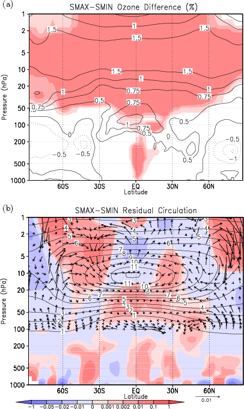
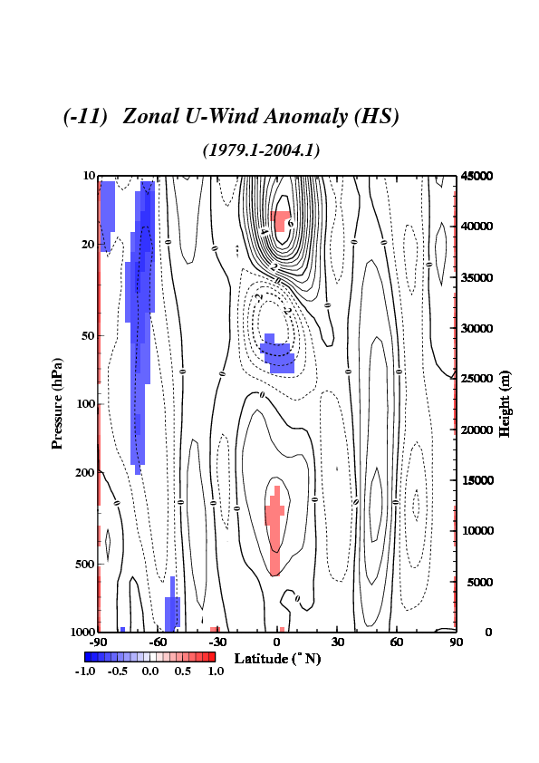

博士課程の研究内容
太陽活動の成層圏大気への影響
太陽活動の11年周期に伴い紫外線域の放射の強度が数％程度変動することが知られています. 東京大学気候システム研究センターと国立環境研究所で開発された化学気候モデル(Chemistry Climate Model: CCM)は, この太陽紫外線変動に伴うオゾン濃度の変化, 大気による3次元的なオゾン輸送, 成層圏光化学反応を計算することができます.
図１(a)は, このCCMを用いて太陽活動の極大期実験と極小期実験を行い, 極小期に対して極大期にオゾンが何％増加するかを示しています. オゾンの多い上部成層圏, 下部中間圏においては従来の説明のとおり, 太陽放射増大時にオゾン生成が増加しそれに伴って気温が上昇するというメカニズムで説明できました.
さらに赤道成層圏下部にも極大期と極小期で１％程度のオゾン濃度の差が見られます（図１a）. 成層圏下部ではオゾンの化学寿命が長いことから, その影響は主にオゾンの輸送を介してのものであると考えられます. そこでオゾン輸送を担う子午面循環などを調べてみると, 極大期と極小期の間で成層圏下部の子午面循環の違いが生じていることが分かり, それがこの赤道成層圏下部のオゾン濃度の差を生じさせていることが分かりました（図１b）.

図１: (a)太陽活動極大期実験と極小期実験を行い, 極小期に対して極大期にオゾンが何％増えるかを示した. 色は有意な領域. (b)ベクトルは極大期と極小期の間の子午面循環の差で, コンターは平均したオゾン濃度. オゾン濃度の濃い部分から薄い部分にベクトルが向いていると, その場所では輸送によって極大期にオゾンが増加することを意味する. (Yamashita et al. [2010], Figure 1)
図１(a)は, このCCMを用いて太陽活動の極大期実験と極小期実験を行い, 極小期に対して極大期にオゾンが何％増加するかを示しています. オゾンの多い上部成層圏, 下部中間圏においては従来の説明のとおり, 太陽放射増大時にオゾン生成が増加しそれに伴って気温が上昇するというメカニズムで説明できました.
さらに赤道成層圏下部にも極大期と極小期で１％程度のオゾン濃度の差が見られます（図１a）. 成層圏下部ではオゾンの化学寿命が長いことから, その影響は主にオゾンの輸送を介してのものであると考えられます. そこでオゾン輸送を担う子午面循環などを調べてみると, 極大期と極小期の間で成層圏下部の子午面循環の違いが生じていることが分かり, それがこの赤道成層圏下部のオゾン濃度の差を生じさせていることが分かりました（図１b）.
- Yamashita, Y., K. Sakamoto, H. Akiyoshi, M. Takahashi, T. Nagashima, and L. B. Zhou (2010): Ozone and temperature response of a chemistry climate model to the solar cycle and sea surface temperature, J. Geophys. Res., 115, D00M05, doi:10.1029/2009JD013436.
- 山下陽介, (2009): 太陽11年周期変動に伴う成層圏大気の応答に関する研究, 平成21年度 東京大学大学院理学系研究科 博士論文, 143pp.
太陽活動の気候に及ぼす影響
赤道下部成層圏には, 約2年周期で西風と東風が交互に現れ下降する成層圏準２年周期振動(quasi-biennial oscillation; QBO)と呼ばれる変動があり, 北半球中緯度付近の東西風変動は, QBOに伴う赤道付近の東西風変動と相関があることが知られています. 図２は赤道付近で下降するQBOの西風(東風)と極付近の成層圏で西風が強く(弱く)なるようなパターンとの相関が大きいことを示しています. QBOが西風(東風)で中緯度付近の西風が強く(弱く)なる傾向は, 太陽活動極大期の11, 12月のみに見られ, 太陽活動による変調を受けています. 興味深いことに, 同時期には影響が成層圏のみならず対流圏にまで見られ, 対流圏の気候への影響が示唆されます.

図２: 太陽活動極大期の12月に北半球中緯度の成層圏で西風が強くなるようなパターンと相関が大きいような東西風の分布を示す.
[top]